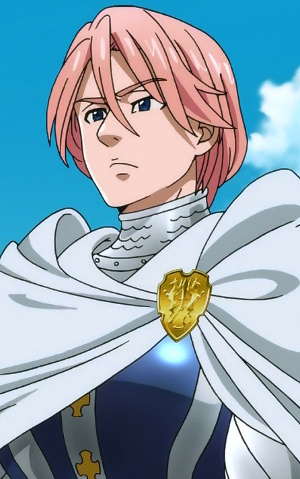

|
Cilan |
- Pokemon Black and White
- Pokemon Movie 14: White - Victini and Zekrom
- Pokemon Movie 14: Black - Victini and Reshiram
- Pokemon Movie 15: Kyurem vs. The Sword of Justice
- Pokemon Black and White: Rival Destinies
- Pokemon Black and White: Adventure in Unova
- Pokemon Black and White: Decolora Adventure
- Pokemon: Mewtwo-Prologue to Awakening
- Pokemon Movie 16: Genesect and The Legend Awakened
- Pokemon Best Wishes! Season 2: Dent and Takeshi! Gyarados's Outrage!!
- Pokemon XYZ Speicals
|
Cilan is one of three gym leaders of Striation City. His twin brothers are Chili and Cress. Cilan is an A-rank Pokemon Connoisseur. He is Ash's Company's navigator and cook. He has a love for solving mysterious and trains. |
 |
Death the Kid |
- Soul Eater
- Soul Eater NOT!
|
Death the Kid is one of sons of Death himself and miester of Liz and Patty Thompson. Death the Kid is normally calm and mature individual. He has an obsession of symmetry to point he has to go and fix it. |
|  |
Gilthunder |
- The Seven Deadly Sins
- The Seven Deadly Sins OVA
- The Seven Deadly Sins: Signs of Holy War
- The Seven Deadly Sins: Revival of The Commandments
|
Gilthunder is one of the holy knights of Britannia Kingdom. He is son to the former Great Holy Knight, Zaratras. At first, he is cruel and cold but friendly and sweet. |
| |
Joker |
- Black Butler: Book of Circus
|
Joker is the ringleader in the Noah's Ark Circus. He is misses a hand fue to unknown reason. He managing the shows and performs. Joker is a kind, easygoing, and cheerful person. He takes care of the members of the circus. |
 |
Ling Yao |
- Fullmetal Alchemist: Brotherhood
- Fullmetal Alchemist: Brotherhood - 4-Koma Theater
|
Ling Yao is the son of Emperor from Xing. His goals is to find the Philosopher's stone to stabilize his country. He is laid back and hungry but a very noble person. He is a skilled fighter and has a strong rivalry with Edward. |